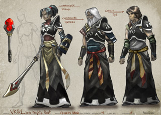

<?xml version="1.0" encoding="ISO-8859-1" ?>
<rss version="2.0" xmlns:media="http://search.yahoo.com/mrss/">
<channel>
<title>RuneScape Developers' Blogs [Project: The Void Knights Series]</title>
<link>http://services/m=devblog/?project_id=31</link>
<description>
Welcome to the Developer Blogs. This section of the website contains articles delving behind the scenes here at Jagex. Each article will showcase a particular project related to RuneScape or the people whose work you don't get to see. Every one of them works hard towards making RuneScape the best it possibly can be, and to make Jagex a great place to work.
</description>
<image><link>http://services/m=devblog/</link><title>RuneScape Developer Blogs</title><url>http://site/img/devblog/feed_logo.png</url></image>
<language>en</language>
<item>
<title>The Void Knights Series: Into the Void</title>
<link>http://services/m=devblog/view_post.ws?post_id=91</link>
<description><![CDATA[               
From tiny acorns, mighty oaks grow... So discovered Mod Moltare with his concept for some knight-based questing.
]]></description>
<author>Mod Moltare</author>
<pubDate>Thu, 22 Apr 2010 11:36:30 BST</pubDate>
<category>activity</category>
<category>development</category>
<category>knights</category>
<category>quest</category>
</item>
</channel>
</rss>
